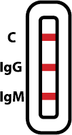
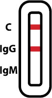
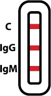
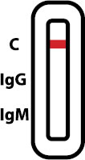
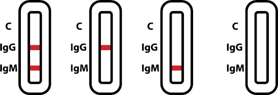
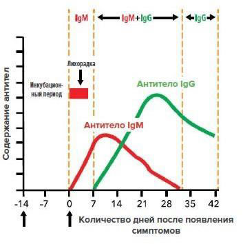
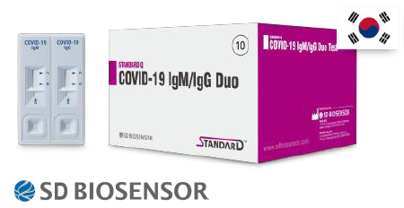
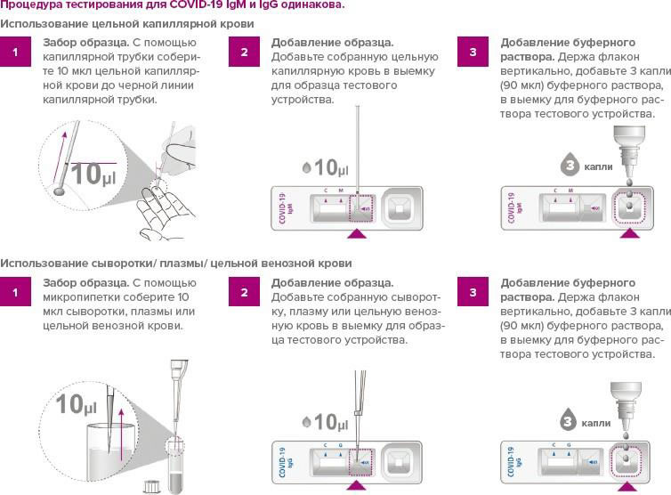

Обзор информации о COVID-19
Первое обнаружение
декабрь 2019 в г. Ухань, КНР
Антиген
SARS-подобный коронавирус (SARS-CoV-2)
Симптомы
Лихорадка, кашель, боль в горле, одышка, диарея,
инфильтрат в легких на рентгеновском снимке грудной
клетки и т.д.
Передача инфекции
от животного к человеку / от человека к человеку
*Воздушно-капельная инфекция (в выделениях из органов дыхания) в группах населения
*Внутрибольничная инфекция
Период развития
2-14 дней
Принцип работы скрининг-тестов
При проведении скрининг-теста* возможны следующие сценарии:

Выявлен иммуноглобулин М (IgM) – 1 фаза. Человек находится в острой стадии заболевания
COVID-19 и в зависимости от степени тяжести протекания болезни должен быть изолирован дома или
госпитализирован в инфекционную больницу.

Выявлен иммуноглобулин G (IgG) при отсутствии тест полосы IgM –3 фаза. Человек переболел COVID-19,
сформировал иммунитет (выработал антитела) и снижен риск повторного заболевания.

Выявлен иммуноглобулин M и G (IgM и IgG) – 2 фаза. Человек является носителем COVID-19,
началась выработка антител памяти (формирование иммунитета) – должен быть изолирован.

Тест не выявил антитела НО! при наличии симптомов ОРВИ необходимо повторное тестирование скрининг- тестом
через неделю (5-7 дней).

ВНИМАНИЕ! На тесте не проявилась контрольная полоса «С» – тест не сработал,
необходимо провести повторное тестирование.
В РЕЗУЛЬТАТЕ ЭТИ ТЕСТЫ МОГУТ СТАТЬ ВАЖНЫМ ЭЛЕМЕНТОМ
В СИСТЕМЕ КОНТРОЛЯ РАСПРОСТРАНЕНИЯ ВИРУСА, СДЕРЖИВАНИЯ РАСПРОСТРАНЕНИЯ ЗАБОЛЕВАНИЯ И ЗАЩИТЫ ПЕРСОНАЛА.

*Только для профессионального применения
STANDARD Q COVID19 IgM/IgG Duo
Набор для проведения экспресс-теста* для качественного выявления и дифференциации антител IgM / IgG к новому коронавирусу SARS-CoV-2 в образцах цельной крови, сыворотки или плазмы крови человека.

МЕТОД ИССЛЕДОВАНИЯ: БЕСПРОБИРНЫЙ ИММУНОХРОМАТОГРАФИЧЕСКИЙ АНАЛИЗ(ИХА)
ЦЕЛЬ АНАЛИЗА: ВЫЯВЛЕНИЕ И ДИФФЕРЕНЦИАЦИЯ АНТИТЕЛ IgM / IgG
БИОМАТЕРИАЛ: КАПИЛЯРНАЯ КРОВЬ ИЗ ПАЛЬЦА ПАЦИЕНТА, ПЛАЗМА, СЫВОРОТКА, ВЕНОЗНАЯ КРОВЬ
ВРЕМЯ ПРОВЕДЕНИЯ ОДНОГО ТЕСТА: НЕ БОЛЕЕ 15 МИН.
РЕЗУЛЬТАТЫ ТЕСТА: ПОЗИТИВНЫЙ/НЕГАТИВНЫЙ/НЕДЕЙСТВИТЕЛЬНЫЙ
ОБОРУДОВАНИЕ ДЛЯ ПРОВЕДЕНИЯ ТЕСТОВ: НЕ ТРЕБУЕТСЯ
МИНИМАЛЬНАЯ УПАКОВКА: 20 ТЕСТОВ
ПРОИЗВОДИТЕЛЬ: SD BIOSENSOR, ЮЖНАЯ КОРЕЯ.
СЕРТИФИКАЦИЯ: 2020.03.05 самодекларация соответствия CE.

ВНИМАНИЕ! Для более точного скрининга IgG–
В ТЕСТЕ STANDARD Q COVID-19 IgM/IgGDuo
рекомендуется брать венозную кровь/ плазму/сыворотку
*Только для профессионального применения